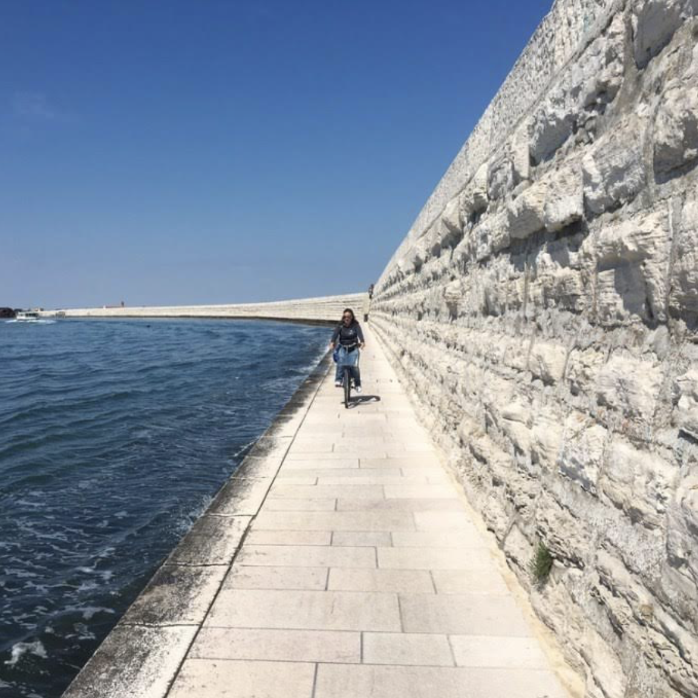

Ca' Roman is the southern part of Pellestrina. There are no housescase or people living here. Here you can only find nature and animals.
Ca' Roman is perfect for cyclying and runningcorrere as cars are not allowed in this area, there is not enough spacespazio for cars.
If you're bravecoraggioso enough, you could enter in all the abandoned churches and in the old abandoned hospitalospedale with broken windows and dirty walls. It smells.
Ca' Roman also hosts some Second World War's bunker rests, interesting to visit. But a bit scarypauroso , you usually don't want to enter alone in there.
While you're in Ca' Roman Simone calls you to offer you and your friends a boat ride, which is very tempting. But you promised Alberto already that you'd have eaten pizza at the beach with him. What do you do now?